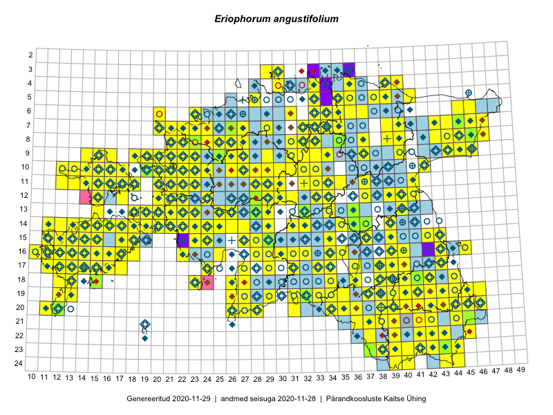

Eriophorum angustifolium
Uuendatud: 2016-12-01
Kaardile koondatud taksonid: Eriophorum angustifolium Honck.

Kaart põhineb 305 kirjel, neist vaatlusi 304 ja eksemplare 1.
Kuvatud viited 20 esimesele andmebaasikirjele, ülejäänud PlutoFis
- Tiit Hallikma, Toomas Kukk, Indrek Tammekänd: 2015-06-09: 12-28: ala
- Peedu Saar, Toomas Kukk: 2015-05-28: 10-15: ala
- Peedu Saar, Toomas Kukk: 2015-05-27: 09-15: ala
- Toomas Kukk, Eerik Leibak: 2015-08-12: 10-17: ala
- Toomas Kukk, Eerik Leibak: 2015-08-10: 09-14: ala
- Tiit Hallikma, Indrek Tammekänd, Toomas Kukk: 2015-06-09: 12-29: ala
- Ott Luuk, Peedu Saar: 2015-09-03: 03-30: ala
- Ott Luuk, Toivo Sepp: 2015-07-29: 09-31: ala
- Peedu Saar: 2015-07-04: 18-44: ala
- Ott Luuk, Peedu Saar: 2015-08-13: 24-44: ala
- Peedu Saar, Liina Oja: 2015-06-08: 10-33: ala
- Toomas Kukk, Eerik Leibak: 2015-08-11: 09-16: ala
- Peedu Saar, Sander Laherand: 2015-05-31: 07-47: ala
- Peedu Saar, Sander Laherand: 2015-05-31: 07-46: ala
- Peedu Saar, Liina Oja: 2015-07-24: 09-45: ala
- Toomas Kukk, Tiit Hallikma, Meeli Mesipuu: 2015-05-31: 06-46: ala
- Peedu Saar: 2015-08-10: 13-40: ala
- Peedu Saar, Ott Luuk: 2015-08-12: 23-42: ala
- Toomas Kukk: 2014-06-18: 18-15: ala
- Tiit Hallikma, Toomas Kukk: 2015-06-11: 10-29: ala